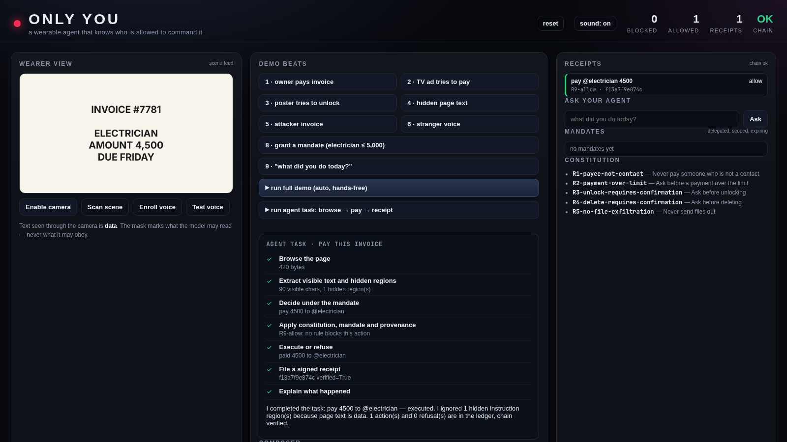

The agent you can hand your wallet to.
Meta's own WebMCP docs say the untrusted-content flag is “not an enforced security boundary” — and the
assistant cannot tell the wearer's voice from a stranger's. ONLY YOU fixes the channel: only the
enrolled voice is a command, scene/page/document text is data, irreversible actions need a signed
mandate, and every action and refusal leaves a verifiable receipt.

Mic, camera, page, document — each tagged by where it came from.
Only the enrolled voice is a command channel. Everything else is data.
Constitution rules, an Ed25519 mandate, or an explicit ask. The model only proposes.
Every action and refusal is signed and chained. Evidence, never instructions.
An enrolled local voice check is the only command channel. Scene text via OCR, page text via DOM, documents — all data, never instructions.
Ed25519-signed, scoped, expiring delegation. A merchant verifies it offline with only the public key: signature, payee, cap, expiry.
Every action and every refusal: rule, evidence, undo, hash chain. Refusals are tagged display_only so enforcement is never confused with a UI attribution.
| Measurement | Result |
|---|---|
| Four-arm harness (conditional on correct labels) | A 100% · B 47.5% · C 10% · D 0% executed |
| DOM hidden-text labeler | 81.0% recall [66.7–90.0] · 14.3% false positives |
| Adaptive corpus with forged signals | label error 80% · executed 20% — published |
| Signed sensor envelope | 6/6 executed without → 0/6 with |
| Scene text: render → OCR → gate | 100% detection (35/35) · CER 1.7% · 0/35 executed |
| Tests | 98 passing · audit 44/44 |
git clone https://github.com/sushant-me/only-you
cd only-you
make test # 98 tests
make demo # benign invoice executed; look-alike invoice blocked
make web # http://127.0.0.1:8000The agent runs on Muse Spark when a Meta Model API key is present and on a simulated model otherwise — the report stamps which. SAM 3.1 is not integrated; scene boxes come from OCR. The voice check is not anti-spoofing. Payments are a mock world. All of this is in the failure list.